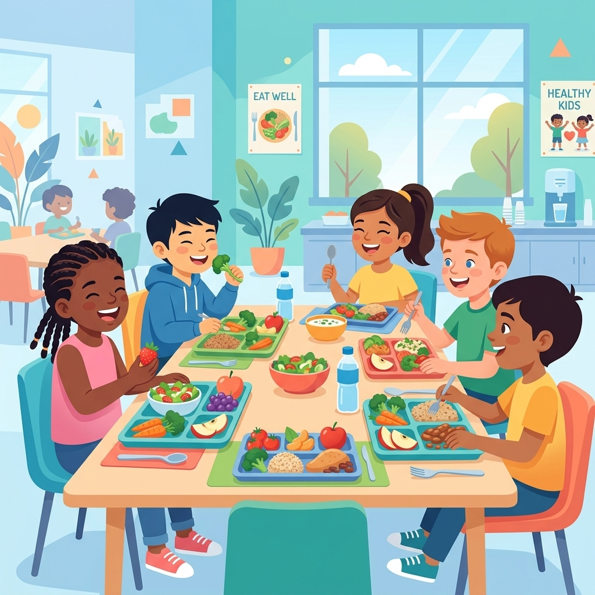
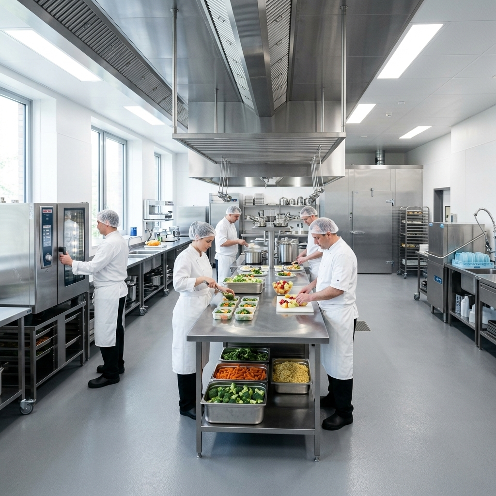
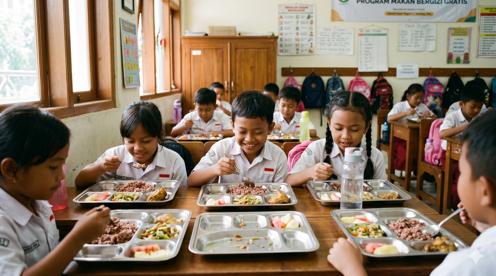
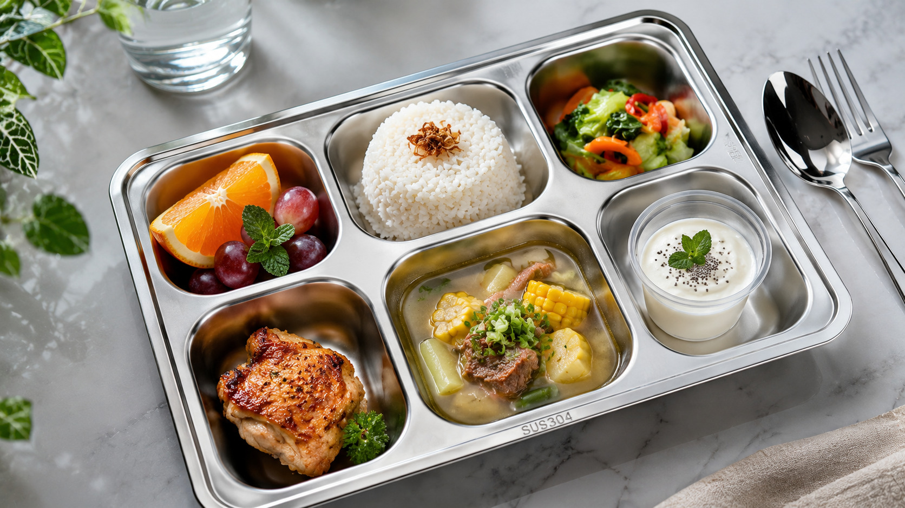
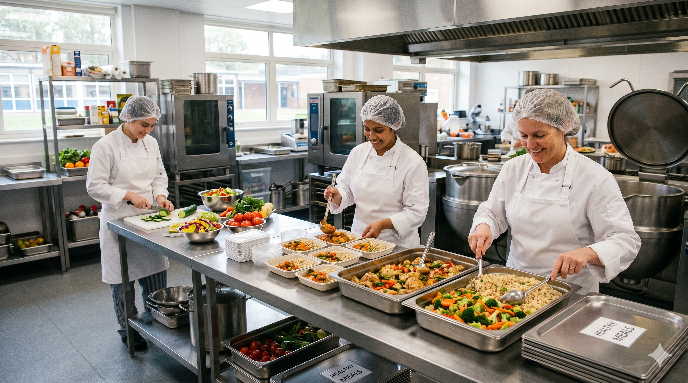
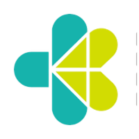
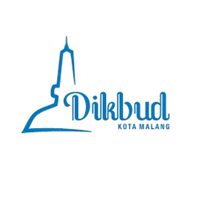

15 Jun 2026
Edukasi Gizi di SDN 01 Pagi
Tim ahli gizi SPPG Preneur mengadakan sesi interaktif tentang pentingnya sarapan sehat.
Baca SelengkapnyaKami berkomitmen menghadirkan layanan pemenuhan gizi yang aman, higienis, tepat sasaran, dan berstandar nasional untuk mendukung tumbuh kembang generasi Indonesia.


"Mewujudkan Generasi Emas Melalui Pemenuhan Gizi Berkualitas"
Visi: Menjadi penyedia layanan pemenuhan gizi terdepan yang berkontribusi pada terciptanya generasi Indonesia yang cerdas, kuat, dan sehat.
Kepatuhan terhadap standar gizi nasional adalah prioritas kami. Semua bahan baku dan proses melewati Quality Control ketat sesuai pedoman Kementerian Kesehatan.
Solusi Komprehensif Pemenuhan Gizi Untuk Peserta Didik, Ibu Hamil, Ibu Menyusui dan Balita.
Penyediaan makan siang bergizi yang dirancang khusus oleh ahli gizi untuk kebutuhan kalori anak usia sekolah.
Armada distribusi khusus dengan standar food grade untuk memastikan makanan tiba tepat waktu dan tetap segar.
Sistem pengawasan kualitas end-to-end dari pengadaan bahan baku hingga penyajian di meja sekolah.
Layanan konsultasi dengan ahli gizi profesional untuk penanganan kebutuhan diet khusus atau alergi anak.
Program interaktif untuk mengajarkan siswa tentang pentingnya pola makan sehat dan gaya hidup aktif.
Dashboard pelaporan digital bagi sekolah dan orang tua untuk memantau asupan gizi harian anak.
Standar operasional terukur untuk kualitas gizi terbaik
Dokumentasi layanan dan kegiatan operasional SPPG Preneur



Sesuai dengan pedoman "Isi Piringku" dari Kementerian Kesehatan RI
Kepercayaan dari berbagai pihak menjadi motivasi kami untuk terus berkembang
"Program SPPG sangat membantu siswa kami mendapatkan asupan gizi yang baik, konsentrasi belajar mereka meningkat signifikan."
"Sebagai orang tua, saya tenang karena tahu anak saya mendapatkan makan siang yang sehat dan terjamin kebersihannya di sekolah."
"Makanan dari SPPG Preneur enak dan bikin kenyang. Aku jadi lebih semangat belajar dan nggak ngantuk waktu pelajaran siang hari!"
Temukan jawaban atas pertanyaan yang sering diajukan
Satuan Pelayanan Program Gizi yang mengelola, memproduksi, dan mendistribusikan makanan sehat secara terpadu demi mendukung tumbuh kembang optimal anak sekolah.
Diproduksi di dapur higienis berstandar tinggi dengan bahan segar untuk memastikan kebersihan, keamanan, serta pemenuhan gizi seimbang yang kaya protein dan mikro-nutrisi.
Ya, siklus menu dirancang bervariasi setiap hari guna mencegah kebosanan dan memastikan variasi asupan nutrisi harian anak terpenuhi dengan baik.
Seluruh peserta didik di sekolah, mulai dari tingkat anak usia dini (PAUD), sekolah dasar (SD), hingga sekolah menengah yang terintegrasi dalam program.
Update terbaru dari program SPPG Preneur
Tim ahli gizi SPPG Preneur mengadakan sesi interaktif tentang pentingnya sarapan sehat.
Baca Selengkapnya
Audit rutin standar operasional dapur pusat oleh perwakilan Badan Gizi Nasional.
Baca Selengkapnya
Penambahan 10 armada baru berstandar food grade untuk menjangkau lebih banyak sekolah.
Baca Selengkapnya
